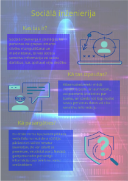

Pikšķerēšana
Uzbrucēji sūta maldinošus e-pastus, ziņas vai saites uz tīmekļa vietnēm, kas šķiet īstas, lai saņēmēju ar viltu piespiestu noklikšķināt un atklāt sensitīvu informāciju, piemēram, paroles, kredītkaršu numurus vai personas datus.
Sociālā inženierija ir stratēģija, ko personas vai grupas izmanto cilvēku manipulēšanai un maldināšanai, lai viņi atklātu sensitīvu informāciju vai veiktu darbības, kas apdraud viņu drošību. Tās pamatā ir psiholoģija un cilvēka uzvedība, nevis tehniskā zinātība.
Sociālās inženierijas uzbrukumos uzbrucējs, lai iegūtu cietušā uzticēšanos, bieži vien uzdodas par uzticamu personu vai avotu. Starp uzbrucēja izmantotajām taktikām ir uzdošanās par citu personu, pārliecināšana vai viltība, lai iegūtu vērtīgu informāciju, piemēram:
Sociālās inženierijas uzbrukumi var izpausties dažādi. Stratēģija ir izmantot cilvēku vājās vietas, lai sasniegtu uzbrucēja mērķus — vai nu iegūt neatļautu piekļuvi, vai nozagt datus vai naudu.
Uzbrucēji sūta maldinošus e-pastus, ziņas vai saites uz tīmekļa vietnēm, kas šķiet īstas, lai saņēmēju ar viltu piespiestu noklikšķināt un atklāt sensitīvu informāciju, piemēram, paroles, kredītkaršu numurus vai personas datus.
Līdzīga pikšķerēšanai, bet vērsta ļoti konkrēti uz kādu personu. Lai izskatītos pārliecinošāki, uzbrucēji īpaši pielāgo vēstījumu, pamatojoties uz konkrētu informāciju par objektu.
Uzbrucēji piedāvā kaut ko vilinošu, piemēram, bezmaksas programmatūras lejupielādi, apmaiņā pret personas datiem vai piekļuvi sistēmām. Tas var ietvert inficētus failus vai saites.
Uzbrucēji rada safabricētu scenāriju vai ieganstu informācijas iegūšanai. Tas bieži vien sevī ietver uzdošanos par kādu uzticamu personu, piemēram, kolēģi vai bankas pārstāvi.
Pikšķerēšanas paveids, ko īsteno balss saziņā, parasti pa telefonu. Uzbrucēji uzdodas par uzticamu personu un pārliecina cietušos atklāt sensitīvu informāciju.
Uzbrucēji tiešsaistē vai klātienē izliekas par kādu citu, lai iegūtu uzticēšanos un manipulētu ar objektu, liekot tam izpaust konfidenciālu informāciju vai veikt konkrētas darbības.
Uzbrucēji galvenokārt tēmē uz sociālo mediju lietotājiem un bieži vien izmanto populārus vai aktuālus tematus, lai radītu maldinošas ziņas, kas liek tām izskatīties svarīgām un uzticamām.
Uzbrucēji draud atklāt sensitīvu informāciju vai radīt sistēmu traucējumus, ja vien netiks samaksāta izpirkuma maksa. Lai cietušos piespiestu rīkoties, viņi tos iebiedē.
Sociālā inženierija ir psiholoģisks uzbrukums, kura laikā uzbrucējs mēģina jūs piemānīt, lai jūs izdarītu kaut ko, ko jums nevajadzētu darīt. Ideja nav jauna, tā ir eksistējusi jau tūkstošiem gadu. Krāpniecība, mānīšanās — tas ir tas pats. Mūsdienu tehnoloģijas kibernoziedzniekiem dod iespēju paslēpties — jūs viņus nevarat redzēt, tādēļ tie var izlikties par ko vien vēlas un mēģināt apmānīt miljoniem cilvēku visā pasaulē. Sociālās inženierijas uzbrukumi var apiet arī daudzas drošības tehnoloģijas.
Jūs saņemat telefona zvanu no kāda, kas uzdodas par datoru atbalsta kompāniju, jūsu interneta pakalpojumu sniedzēju vai Microsoft tehniskā atbalsta darbinieku. Zvanītājs izstāsta, ka jūsu dators aktīvi skenē internetu un viņi uzskata, ka tas ir inficēts, un viņam ir uzdots jums palīdzēt "izārstēt" jūsu datoru. Tad viņš izmanto dažādus tehniskus terminus un apraksta virkni darbību, lai pārliecinātu jūs, ka dators tiešām ir inficēts.
Piemēram, viņš var prasīt jums pārbaudīt, vai jūsu datorā ir attiecīgi faili, un palīdzēt jums tos atrast. Kad jūs atrodat šos failus, zvanītājs jūs pārliecina, ka tie nozīmē infekciju, kaut gan patiesībā tie ir parasti sistēmas faili, ko var atrast gandrīz katrā datorā. Tiklīdz viņi ir pārliecinājuši jūs, jums tiek uzspiests vai nu nopirkt drošības risinājumu (kas patiesībā ir ļaunatūra) vai atļaut attālinātu piekļuvi datoram. Ja piešķirat piekļuvi, krāpnieki pārņem datoru un nozog datus.
Kibernoziedznieks izpēta par jūsu organizāciju pieejamo informāciju tiešsaistē un identificē jūsu priekšnieka vai kolēģa vārdu. Tad uzbrucējs izveido e-pastu, izliekoties, ka tas ir no šīs personas, un nosūta to jums. E-pastā parasti tiek prasīta steidzīga rīcība, piemēram, pārskaitīt līdzekļus vai nosūtīt konfidenciālu informāciju uz personīgo e-pasta kontu.
Tas, kas padara šādus uzbrukumus īpaši bīstamus, ir tas, ka kibernoziedznieki veic iepriekšēju izpēti. Papildu drošības tehnoloģijas, piemēram, antivīruss vai ugunsmūris, nespēj šādus uzbrukumus atpazīt, jo tur nav ļaunatūras vai ļaundabīgu saišu.
Atcerieties, ka sociālās inženierijas uzbrukumi nav tikai e-pasti vai telefona zvani. Tie var notikt jebkādā veidā, ieskaitot īsziņas, sociālos tīklus vai pat personīgi. Galvenais ir zināt, kā atpazīt šādus uzbrukumus — tad jūs varēsiet sekmīgi aizsargāties.
Par laimi, šādu uzbrukumu apturēšana ir vienkāršāka nekā varētu likties — labākā aizsardzība ir veselais saprāts. Ja kaut kas liekas aizdomīgs vai nepareizs, tas var būt uzbrukums. Parasti uz sociālās inženierijas uzbrukumu norāda šādas pazīmes:
Ja jums ir aizdomas, ka kāds mēģina jūs apmānīt, neturpiniet komunikāciju ar šo personu. Ja uzbrukums ir saistīts ar darbu, nekavējoties ziņojiet palīdzības dienestam vai drošības komandai. Atcerieties — veselais saprāts ir jūsu labākā aizsardzība.
